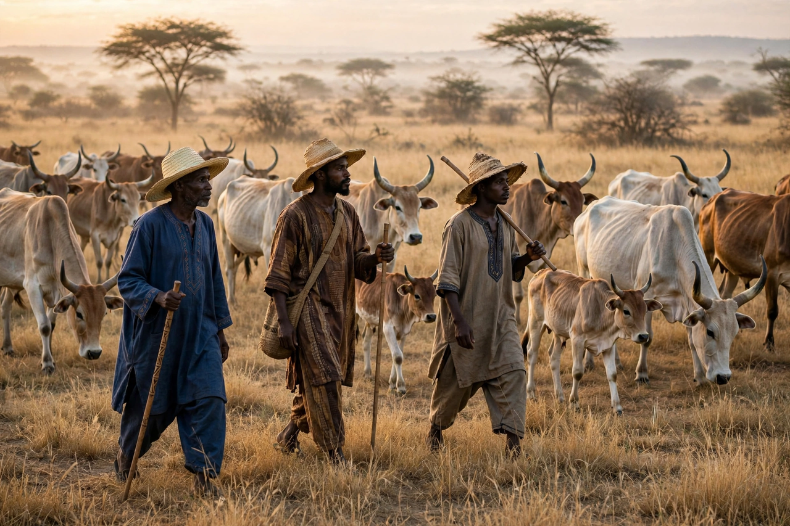

From Wikipedia, the free encyclopedia
| Fula people | |
| Total population | approx. 25–40 million |
|---|---|
| Regions | West and Central Africa: Nigeria, Guinea, Senegal, Cameroon, Mali, Niger, Burkina Faso, The Gambia and others |
| Languages | Fula (Pulaar/Fulfulde), a Senegambian branch of Niger–Congo |
| Religion | Predominantly Islam |
The Fula, also called Fulani, Fulɓe, or Peul, are one of the largest ethnic groups in West and Central Africa, spread across many countries from Senegal to Sudan. Traditionally pastoralist cattle-herders — among the world's largest nomadic peoples — many Fula also settled as farmers, traders, and urban scholars and rulers.

Fula origins are debated, but by the early second millennium they had spread from the Senegal valley eastward along the Sahel. Fula scholars and warriors were central to the Islamic reform movements and jihads of the 18th and 19th centuries, founding states including the Imamate of Futa Jallon in Guinea, the Sokoto Caliphate under Usman dan Fodio (1804) in present-day Nigeria, and the Toucouleur Empire of El Hadj Umar Tall. These movements spread Islam and Fula language and culture widely.
Fula life is guided by pulaaku, a code of conduct stressing patience, self-control, modesty, wisdom, and foresight. Cattle remain central to wealth, diet, and identity among pastoral groups such as the Wodaabe, famed for their elaborate dress and the Gerewol festival. Settled Fula (Fulani "town" groups) have long been prominent in scholarship, commerce, and politics across the region, alongside peoples such as the Mandinka and Wolof.
See also: Mandinka people · Wolof people · Sokoto Caliphate · Usman dan Fodio